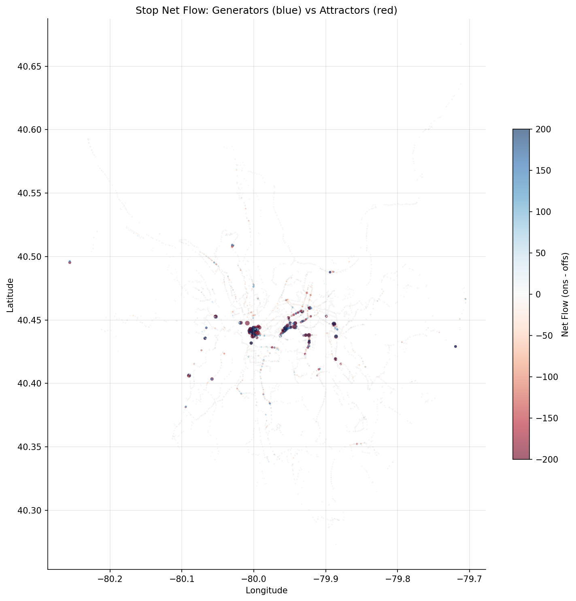
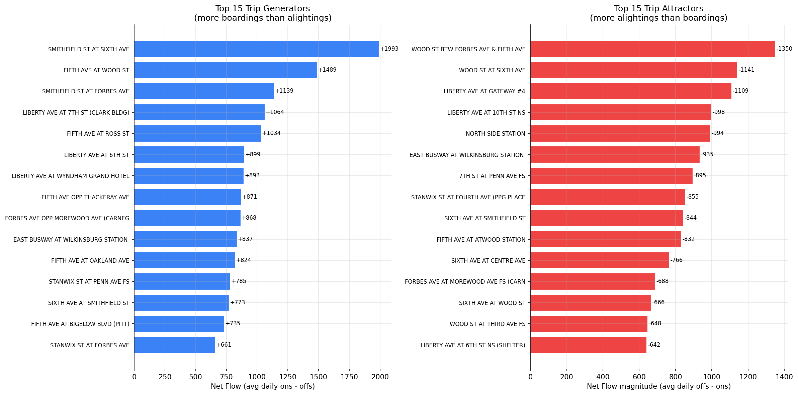

Analysis
35 - Boarding/Alighting Flow Analysis
Equity and Strategic Planning
Coverage: Coverage window unavailable for this page.
Built 2026-03-20 19:31 UTC · Commit 1ffb273
Page Navigation
Analysis Navigation
Data Provenance
flowchart LR
35_boarding_alighting_flows(["35 - Boarding/Alighting Flow Analysis"])
f1_35_boarding_alighting_flows[/"data/bus-stop-usage/wprdc_stop_data.csv"/] --> 35_boarding_alighting_flows
d1_35_boarding_alighting_flows(("numpy (lib)")) --> 35_boarding_alighting_flows
d2_35_boarding_alighting_flows(("polars (lib)")) --> 35_boarding_alighting_flows
classDef page fill:#dbeafe,stroke:#1d4ed8,color:#1e3a8a,stroke-width:2px;
classDef table fill:#ecfeff,stroke:#0e7490,color:#164e63;
classDef dep fill:#fff7ed,stroke:#c2410c,color:#7c2d12,stroke-dasharray: 4 2;
classDef file fill:#eef2ff,stroke:#6366f1,color:#3730a3;
classDef api fill:#f0fdf4,stroke:#16a34a,color:#14532d;
classDef pipeline fill:#f5f3ff,stroke:#7c3aed,color:#4c1d95;
class 35_boarding_alighting_flows page;
class d1_35_boarding_alighting_flows,d2_35_boarding_alighting_flows dep;
class f1_35_boarding_alighting_flows file;
Findings
Findings: Boarding/Alighting Flow Analysis
Summary
PRT's system-wide boarding/alighting balance is nearly perfect (ratio 1.003), but individual stops show strong directional asymmetry. The top generators (net boardings) are outbound departure points on Smithfield St, 5th Ave, and Liberty Ave in downtown. The top attractors (net alightings) are inbound arrival points on Wood St, Liberty Ave at Gateway, and North Side Station. The directional data confirms a classic radial commuter pattern: inbound trips net +22,385 boardings vs outbound trips net -24,197 (i.e., people board going in and alight going out).
Key Numbers
- 130,121 avg weekday boardings vs 129,684 avg alightings (ratio 1.003)
- 3,103 (46%) stops are net generators; 3,442 (51%) are net attractors; 174 (3%) balanced
- Inbound on/off ratio: 1.36 (net +11,207 boardings)
- Outbound on/off ratio: 0.72 (net -12,234 boardings)
- Top generator: Smithfield St at Sixth Ave (+1,993 net/day)
- Top attractor: Wood St btw Forbes & Fifth (-1,350 net/day)
- Median stop on/off ratio: 0.76 (slight attractor skew)
- 38.8% of stops are strong generators (ratio > 1.5); 48.0% are strong attractors (ratio < 0.67)
Observations
- The network is classically radial. Inbound stops generate a strong net surplus of boardings (~+11K/day), meaning suburban riders board inbound and alight downtown. Outbound stops show the mirror: net ~-12K, as downtown riders board outbound and alight in suburbs.
- Downtown has both strong generators and attractors, on different streets. Smithfield St and 5th Ave are net generators (people boarding outbound departures), while Wood St and Liberty Ave/Gateway are net attractors (people arriving inbound). This reflects the one-way street grid routing buses through different downtown streets for inbound vs outbound.
- Busway stations appear on both lists. Wilkinsburg Station shows split behavior: Platform C is a generator (+837/day, outbound departures from the East Busway) while Platform A is an attractor (-935/day, inbound arrivals). This confirms the station's role as a major suburban interchange.
- North Side Station is the #5 attractor (-994 net/day), consistent with its role as a major inbound terminus where light rail and busway passengers alight.
- Oakland/university stops are generators: 5th Ave opp Thackeray (+871) and Forbes at Morewood (+868) show students boarding outbound to return home.
- The median stop is a slight attractor (ratio 0.76), reflecting that many suburban stops have more people getting off (returning home) than getting on.
Discussion
The boarding/alighting flow pattern is a direct fingerprint of Pittsburgh's commuter geography. The strong inbound-boarding / outbound-alighting asymmetry (+11K/-12K) confirms that PRT operates as a radial commuter network focused on downtown. The slight imbalance (outbound net is ~1,000 higher than inbound net) likely reflects "Both"-direction stops that aggregate mixed flows.
The street-level generator/attractor split in downtown is operationally informative: Smithfield St outbound stops need boarding capacity (shelters, queuing space, real-time info), while Wood St inbound stops need alighting capacity (wide sidewalks, clear exits). This differs from a simple "downtown = destination" model and has implications for stop amenity design.
The presence of Oakland as a net generator is notable -- it suggests the 5th Ave/Forbes corridor serves as a secondary hub where students and workers board to travel outbound, not just as a destination from downtown. This bidirectional flow may explain why 5th Ave routes face OTP challenges: high dwell time at stops that serve both directions heavily.
For service planning, the net flow data identifies where passenger demand is structurally asymmetric. Routes serving strong generators could potentially benefit from express or limited-stop variants in the outbound direction, while routes terminating at strong attractors could justify higher inbound frequency.
Caveats
- The "direction" field (Inbound/Outbound/Both) groups stops, not individual trips. Stops coded "Both" handle mixed flows that don't cleanly separate.
- Net flow reflects the first stop a person is counted at, not their complete trip. Transfer passengers are counted at each stop they use.
- Pre-pandemic weekday data (FY2019); commuter patterns may have shifted with remote work.
- Physical stops serving multiple routes aggregate flows across routes, which may mask route-specific patterns.
Review History
- 2026-02-27: RED-TEAM-REPORTS/2026-02-27-analyses-31-35.md — 1 significant issue. Fixed double-counting in
load_directional_flows(): now averages across datekeys per stop-route-direction before summing. Directional net flows corrected (~halved); ratios unchanged.
Output

geographic scatter plot colored by net flow (blue = generator, red = attractor).

horizontal bar chart of top 15 generators and attractors.
No interactive outputs declared.
per-stop boardings, alightings, net flow, and classification.
Preview CSV
Methods
Methods: Boarding/Alighting Flow Analysis
Question
Which stops are major trip generators (net boardings) vs trip attractors (net alightings), and how does the boarding/alighting balance vary by direction and geography?
Approach
- Aggregate pre-pandemic weekday ridership to the physical-stop level, keeping boardings and alightings separate.
- Compute net flow per stop:
net = avg_ons - avg_offs. Positive = net generator (more people board than alight); negative = net attractor. - Classify stops by net flow magnitude and sign; identify the top generators and attractors.
- Examine the inbound/outbound direction dimension: inbound stops should skew toward alightings (attractor) and outbound toward boardings (generator) if the network is radial.
- Map net flow geographically to reveal land-use patterns (residential origins vs employment/commercial destinations).
- Compute the boarding-to-alighting ratio per stop and examine its distribution.
Data
| Name | Description | Source |
|---|---|---|
wprdc_stop_data.csv |
Stop-level boardings/alightings by route, direction, and period | Local CSV (data/bus-stop-usage/) |
Output
output/stop_net_flow.csv-- per-stop boardings, alightings, net flow, and classificationoutput/net_flow_map.png-- geographic scatter plot colored by net flow (blue = generator, red = attractor)output/top_generators_attractors.png-- horizontal bar chart of top 15 generators and attractors
Sources
| Name | Type | Why It Matters | Owner | Freshness | Caveat |
|---|---|---|---|---|---|
| data/bus-stop-usage/wprdc_stop_data.csv | file | Referenced via DATA_DIR path composition in analysis script. | Local project data owner not specified. | Snapshot file; refresh by rerunning its pipeline step. | May lag upstream source updates. |
| numpy | dependency | Runtime dependency required for this page's pipeline or analysis code. | Open-source Python ecosystem maintainers. | Version pinned by project environment until dependency updates are applied. | Library updates may change behavior or defaults. |
| polars | dependency | Runtime dependency required for this page's pipeline or analysis code. | Open-source Python ecosystem maintainers. | Version pinned by project environment until dependency updates are applied. | Library updates may change behavior or defaults. |